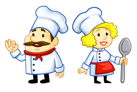

<!--
  Generated template for the AboutYouPage page.

  See http://ionicframework.com/docs/components/#navigation for more info on
  Ionic pages and navigation.
-->
<ion-header>

  <ion-navbar>
    <ion-title> About You</ion-title>
  </ion-navbar>

</ion-header>


<ion-content padding>
  <div class="about" text-center>
    <h4>How do you want to start?</h4>
    <p>You can switch profile anytime later</p>
  </div>
  <ion-slides pager>
    <ion-slide>
      <div class="imagecontainer">
        
      </div>
      <ion-radio  value="go"></ion-radio>
      <h2>Cook</h2>
    </ion-slide>
    <ion-slide>
        <div class="imagecontainer">
            
          </div>
          <ion-radio  value="go"></ion-radio>
        <h2>Customer</h2>
    </ion-slide>
  </ion-slides>
  <div padding>
      <button ion-button color="primary" block (click)="details()">Continue</button>
  </div>
</ion-content>
